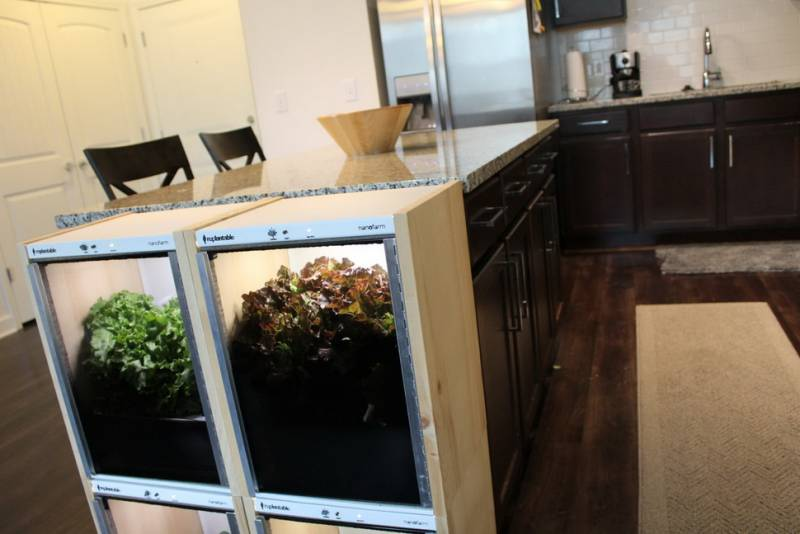
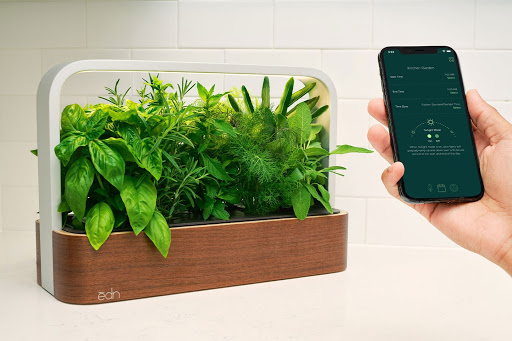

1. sproudpencil
Sprout, pensil yang bisa ditanam Selain digunakan sebagai alat tulis, rupanya pensil juga bisa digunakan untuk bercocok tanam. Setidaknya, itu yang dilakukan oleh Sprout. Pada dasarnya, Sprout merupakan sebuah pensil yang biasa kita gunakan untuk menulis, namun dilengkapi dengan sebuah kapsul di bagian pangkalnya. Dengan menanam pensil tersebut, kamu bisa mengaktifkan kapsul benih di dalamnya. Ada banyak jenis benih tanaman dalam pensil ini, mulai dari sayuran, bunga, tomat, rosemary dan sebagainya. Pensil ini bisa ditanam saat dia sudah terlalu pendek untuk kamu gunakan, jadi tidak akan sia-sia.
2. Nanofarm
Nanofarm, membuat pemula jadi seperti pro. Alat ini terdiri dari replantable kit yang berisi bibit dari tanaman, nampan berisi air, wadah, dan sistem pencahayaan sendiri. Terdapat dua tombol utama pada badan Nanofarm, yakni ‘mulai’ yang berfungsi untuk memulai proses penanaman dan ‘panen’ yang digunakan saat tanaman sudah siap untuk dipanen. Alat ini sendiri dibuat dengan bahan-bahan berkualitas tinggi, mulai dari bingkai yang terbuat dari baja berlapis kayu alami, sampai pintu yang tahan karat.

3. Wall farm
Click & Grow Wall Farm, lemari untuk tanaman. Pada dasarnya, Wall Farm merupakan sebuah kabinet pintar yang berisi tiga deret rak untuk menanam berbagai jenis sayuran maupun buah-buahan. Alat ini menggunakan material tanah khusus yang dirancang dengan hasil penerapan nanotechnology. Efeknya, material itu bisa memertahankan kadar air, oksigen, pH, dan nutrisi lain dalam tingkat yang optimal. Selain praktis, Click & Grow diklaim mampu memercepat pertumbuhan tanaman sampai 30 persen. Namun, kelemahan dari alat ini adlaah kmau cuma bisa menggunakan benih tanaman yang dijual oleh Clik & Grow sendiri.
4. Grobo
Dari luar, Grobo terlihat seperti sebuah dispenser air. Namun, kalau diperhatikan lebih lanjut, di dalam ‘dispenser’ inilah kamu bisa menciptakan kebun mini. Cara menggunakannya, kamu cukup menanam bibit di bagian dasar Grobo, lalu buka aplikasi yang bisa kamu unduh untuk smartphone dan pilih jenis tanaman, lalu tunggu sampai tanaman siap dipanen.
Ada sejumlah sensor di dalam Grobo yang mampu memonitor kesehatan tanaman, mulai dari sensor suhu dan kelembapan, sampai sensor kadar pH. Selain itu, Grobo juga dilengkapi dengan deretan lampu LED yang berperan sebagai pengganti sinar matahari, sehingga tanaman bisa tumbuh secara maksimal.